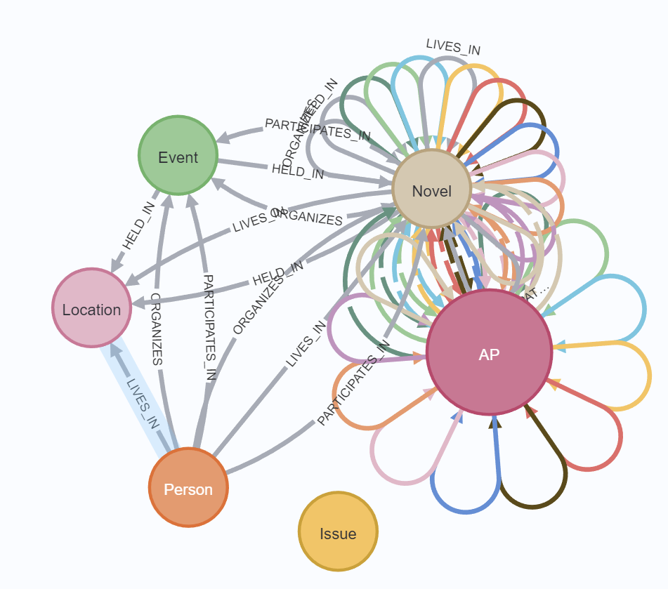

<!DOCTYPE html>
<html lang="en">
<head>
  <meta charset="UTF-8" />
  <meta name="viewport" content="width=device-width, initial-scale=1.0"/>
  <title>Static Novel Demo</title>
  <script defer src="https://unpkg.com/react@18/umd/react.development.js"></script>
  <script defer src="https://unpkg.com/react-dom@18/umd/react-dom.development.js"></script>
  <script defer src="https://unpkg.com/@babel/standalone/babel.min.js"></script>
  <script src="https://cdn.tailwindcss.com"></script>
</head>
<body class="bg-black text-white">
  <div id="root"></div>

  <script type="text/babel">
    const { useState } = React;

    function App() {
      const [issue, setIssue] = useState("war");
      const [characters, setCharacters] = useState([]);
      const [selectedCharacter, setSelectedCharacter] = useState("");
      const [message, setMessage] = useState("");
      const [story, setStory] = useState("");
      const [coverUrl, setCoverUrl] = useState("");

      function generateGraph() {
        setMessage("delete Novel nodes, generating new Novel nodes");
      }

      function startStory() {
        setStory(`Title: "Shadows of the Protocol: War in the Age of Echoes"

      Chapter 1: The Static War
      
      Suziki watches a drone-strike simulation while classical poetry plays in the background. The battlefield is no longer physical—it’s a space of algorithms and predictive logic. He’s disturbed: real death, real people, but invisible consequences.
      
      Chapter 2: The Echo Vault
      
      Yoshida retrieves emotional residues from the last skirmish. Akiko warns her: such actions are flagged as "Emotionally Destabilizing" by the Institution AI. But Yoshida is determined. “We can’t fix what we refuse to feel.”
      
      Chapter 3: Algorithmic Dissent
      
      Akiko uses the AP society graph to trace how war propaganda normalizes over time. ValuePerspective nodes tied to compassion shrink. “War,” she tells Suziki, “is just a misaligned protocol.” Suziki challenges her: “Then give me a better one.”
      
      Chapter 4: A New Protocol
      
      Akiko crafts an AP-based governance system: instead of centralized military commands, she uses feedback loops from EverydayExperience to predict the emergence of conflict, and redirects those signals back into institutions via rapid civic decision nodes.
      
      Chapter 5: The Institutional Coup
      
      The existing Institutional AIs resist Akiko’s intervention. She and Yoshida are detained. Suziki leads a rogue mission to extract them, using obsolete guerrilla tactics—proof that value-driven leadership can still beat sterile logic.
      
      Chapter 6: Tokyo in Flames
      
      War breaks out—not from soldiers, but from societal misalignment. An ideological virus infects the Institution’s decision protocols. Chaos reigns. Akiko sends a final signal to Suziki: “Reboot the paradigm.”
      
      Chapter 7: The Rebirth
      
      Suziki broadcasts a city-wide protocol reset—founded not on force, but on an avant-garde model of awareness, critique, and empathy. The AP model becomes law: institutions must be built on feedback from ValuePerspective, not just control.
      
      Epilogue: Echoes Beyond War
      
      Years later, Yoshida runs a center for trauma resonance. Akiko teaches systems ethics. Suziki, now a quiet urban gardener, occasionally lectures on “the war that felt too quiet.”
      
      Reflection on the AP Society:
      
      In AP society, war is not caused by hatred alone—but by failure to translate personal discomfort into institutional feedback. The key is the circular flow: EverydayExperience must question, Institutions must listen, Technology must enable empathy, and Society must reflect. In this story, Suziki’s transformation embodies that recursive shift—a soldier who learned that true leadership starts not from command, but from critique.
      `);
        setCoverUrl("./Images/sci-fi-cover.jpg");
      }

      function importGraph() {
        setCharacters([
          {
            name: "Suziki",
            age: 45,
            role: "Military Leader",
            imageUrl: "./Images/sci-fi-character.jpg"
          },
          {
            name: "Yoshida",
            age: 32,
            role: "Field Medic",
            imageUrl: "./Images/sci-fi-character2.jpg"
          },
          {
            name: "Akiko",
            age: 28,
            role: "Tech Specialist",
            imageUrl: "./Images/sci-fi-character3.jpg"
          },
        ]);
      }

      return (
        <div className="min-h-screen bg-black text-white flex flex-col items-center justify-start p-8 space-y-6 animate-fadeIn">
          <div className="absolute top-4 right-4 flex space-x-4">
            <a href="https://github.com/ZifanYE/SFnovel_graphAI" target="_blank" rel="noopener noreferrer">
              <svg className="w-8 h-8 text-white hover:text-gray-300" fill="currentColor" viewBox="0 0 24 24">
                <path d="M12 2C6.48 2 2 6.48 2 12c0 4.42 2.87 8.17 6.84 9.49.5.09.66-.22.66-.49v-1.7c-2.78.61-3.37-1.34-3.37-1.34-.46-1.16-1.12-1.47-1.12-1.47-.91-.62.07-.61.07-.61 1.01.07 1.54 1.04 1.54 1.04.89 1.52 2.34 1.08 2.91.83.09-.65.35-1.08.63-1.33-2.22-.25-4.55-1.11-4.55-4.94 0-1.09.39-1.98 1.03-2.68-.1-.25-.45-1.27.1-2.65 0 0 .84-.27 2.75 1.02A9.564 9.564 0 0112 6.8c.85.004 1.71.11 2.52.33 1.91-1.29 2.75-1.02 2.75-1.02.55 1.38.2 2.4.1 2.65.64.7 1.03 1.59 1.03 2.68 0 3.84-2.34 4.68-4.57 4.93.36.31.56.94.56 1.54v2.28c0 .27.16.59.67.49A10.014 10.014 0 0022 12c0-5.52-4.48-10-10-10z"/>
              </svg>
            </a>
            <a href="https://s-fnovel-graph-ai.vercel.app/" target="_blank" rel="noopener noreferrer">
              <svg className="w-8 h-8" viewBox="0 0 100 100" xmlns="http://www.w3.org/2000/svg">
              <circle fill="#33495F" cx="50" cy="50" r="50"/>
               <clipPath id="a">
               <path d="M100 50c0 27.614-22.387 50-50 50-27.614 0-50-22.386-50-50S22.386 0 50 0h50v50z"/>
               </clipPath>
                <g clip-path="url(#a)" fill="#ffffff">
                  <path opacity=".2" d="M31 19.5c2.55-.45 4.051-1.95 4.5-4.5.45 2.55 1.951 4.05 4.5 4.5-2.549.451-4.05 1.95-4.5 4.5-.449-2.55-1.95-4.049-4.5-4.5z"/>
                  <path opacity=".1" d="M71 74.5c2.55-.45 4.051-1.95 4.5-4.5.45 2.55 1.951 4.05 4.5 4.5-2.549.451-4.05 1.95-4.5 4.5-.449-2.55-1.95-4.049-4.5-4.5zm-60-10c2.55-.45 4.051-1.95 4.5-4.5.45 2.55 1.951 4.05 4.5 4.5-2.549.451-4.05 1.95-4.5 4.5-.449-2.55-1.95-4.049-4.5-4.5z"/>
                </g>
                <g clip-path="url(#a)">
                <path fill="#E94B35" d="M100 .1c-.156.018-.117.058-.1-.1-23.316 2.979-36.539 12.281-44.035 22.035a50.75 50.75 0 0 0-.782 1.047l-.008.01C47.015 34.196 46.087 45.812 46 49h-1l-1 3 4 4 3-1v-1a39.77 39.77 0 0 0 7.066-.773l.002.002c.729-.182.932.076.932 3.771v9c0 1.809.943 2.497 1.945 1.494 2.423-2.428 3.003-3.023 8.5-8.528 4.16-4.167 4.676-6.595 2.957-11.059C83.953 41.369 96.432 27.888 100 .1z"/>
                <path fill="#C23824" d="M48 56l-4-4 1-3h2l4 4v2l-3 1zm4-28c-1.718-.69-2-1-4-1s-4.183 1.38-6.861 4.063c-4.254 4.259-4.85 4.839-8.516 8.508C31.425 40.771 33.263 41 36 41c5.233 0 9.297-.125 10.791 1.42C48.764 44.46 52 28 52 28zm48-28c-.639 4.973-1.566 9.579-2.721 13.678-1.049-1.97-2.562-4.364-4.5-6.272-2.151-2.12-4.812-3.632-6.826-4.585C91.979 1.091 96.783.412 100 0z"/>
                <path opacity=".3" fill="#ffffff" d="M72.402 47.907c1.719 4.463 1.312 6.788-2.854 10.954-.844.844-7.828 7.859-8.604 8.633-1.003 1.002-1.911.315-1.944-1.494v-.652c3-3 9.689-8.938 11-11.348.768-1.411.352-3.654 0-5-3.312 1.76-11.516 4.094-11.932 4.229-3.162.646-5.601.714-7.068.771v-.656S80.975 43.681 100 0c-3.594 28.047-16.047 41.369-27.598 47.907z"/>
                <path fill="#ffffff" d="M77.5 28c-3.584 0-6.5-2.916-6.5-6.5s2.916-6.5 6.5-6.5 6.5 2.916 6.5 6.5-2.916 6.5-6.5 6.5z"/>
                <path fill="#C23824" d="M77.5 16a5.5 5.5 0 1 1 0 11 5.5 5.5 0 0 1 0-11m0-2c-4.137 0-7.5 3.364-7.5 7.5s3.363 7.5 7.5 7.5 7.5-3.364 7.5-7.5-3.363-7.5-7.5-7.5z"/>
                <path fill="#D7DCDE" d="M44 52l4 4-35 36-6-6 37-34z"/>
                <path fill="#F7F7F7" d="M43.875 52l2 2L7.5 91.5l-3-3L43.875 52z"/>
                </g>
              </svg>
            </a>
          </div>

          <h1 className="text-4xl font-bold mt-8 text-center">🚀 Static Novel Demo 🚀</h1>
          <input
            type="text"
            value={issue}
            onChange={(e) => setIssue("war")}
            placeholder="Enter social issue..."
            className="border-2 border-gray-600 bg-gray-800 p-3 rounded w-full max-w-xl text-white placeholder-gray-400 focus:outline-none focus:ring-2 focus:ring-blue-500"
          />
          <div className="flex space-x-4 mt-4">
            <button onClick={generateGraph} className="bg-blue-600 hover:bg-blue-700 text-white px-8 py-3 rounded">
              Generate Graph
            </button>
            <button onClick={importGraph} className="bg-yellow-500 hover:bg-yellow-600 text-white px-8 py-3 rounded">
              Import Graph
            </button>
          </div>

          {message && <p className="text-green-400 mt-4">{message}</p>}

          {characters.length > 0 && (
            <div className="mt-10 w-full max-w-6xl">
              <h2 className="text-2xl mb-6 text-center">Select Your Character</h2>
              <div className="grid grid-cols-1 sm:grid-cols-2 md:grid-cols-3 gap-6">
                {characters.map((char) => (
                  <div key={char.name} className="bg-gray-800 p-4 rounded">
                    
                    <div className="font-bold">{char.name}</div>
                    <div className="text-sm">Age: {char.age}</div>
                    <div className="text-sm">Role: {char.role}</div>
                    <label className="mt-2 inline-flex items-center">
                      <input
                        type="radio"
                        name="character"
                        value={char.name}
                        checked={selectedCharacter === char.name}
                        onChange={(e) => setSelectedCharacter(e.target.value)}
                        className="mr-2"
                      />
                      Select
                    </label>
                  </div>
                ))}
              </div>
              <div className="mt-6 text-center">
                <button onClick={startStory} className="bg-green-500 hover:bg-green-600 px-8 py-3 rounded text-white">
                  Start Story Generation
                </button>
              </div>
            </div>
          )}

          {coverUrl && story && (
            <div className="mt-10 w-[400px] h-[600px] bg-white rounded-xl overflow-hidden shadow-lg">
              <div className="h-[500px]">
                
              </div>
              <div className="h-[100px] bg-gray-200 text-black px-4 py-3 flex items-center justify-center">
                <h2 className="text-xl font-bold text-center">
                  {story.match(/Title:\s*(.+?)\n/)?.[1] || "Untitled"}
                </h2>
              </div>
            </div>
          )}

          {story && (
            <div className="mt-10 w-full max-w-3xl bg-gray-900 p-6 rounded">
              <h2 className="text-2xl mb-4">🌌 Story Generated</h2>
              <pre className="text-gray-300 whitespace-pre-wrap">{story}</pre>
            </div>
          )}

          {story && (
            <div className="mt-10 w-full max-w-3xl bg-gray-900 p-6 rounded">
              <h2 className="text-2xl mb-4">Neo4j Graph Visualization</h2>
              <p className="text-gray-300 mb-4">This is how the generated graph looks in Neo4j:</p>
              
               
            </div>
          )}

          {story && (
            <div className="mt-10 w-full max-w-3xl bg-gray-900 p-6 rounded">
              <p className="text-gray-400 italic mb-4">
            The following effect is generated by GPT-4o and integrated into the visual novel engine webGAL.
            Dynamic chapter generation based on a database is still a future work of this system, so the content below is for reference only.
            </p>
            </div>
          )}
          {story && (
            <div className="mt-10 w-full max-w-6xl bg-gray-900 p-6 rounded">
              <iframe
                src="https://zifanye.github.io/VN/"
                width="100%"
                height="600px"
                className="rounded shadow-lg"
                frameBorder="0"
                allowFullScreen
              ></iframe>
            </div>
          )}


            
        </div>
      );
    }

  ReactDOM.createRoot(document.getElementById("root")).render(<App />);
  </script>


</body>
</html>
